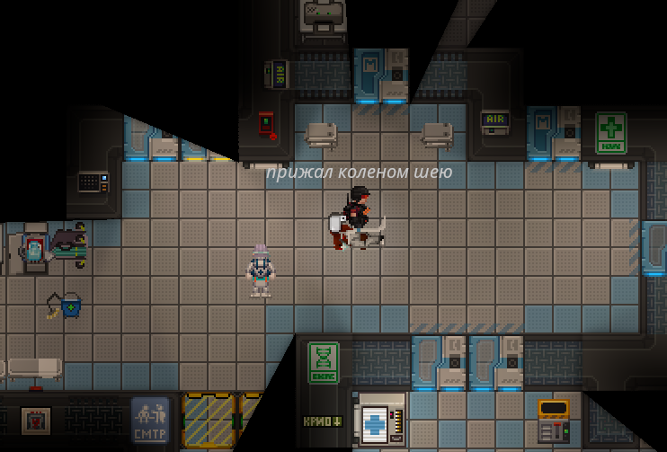

ДС
ДС
 Мон.
Мон.
 Бусти
Бусти
Руководство для Отдела Безопасности в SS14
Добро пожаловать в ряды "доблестной" службы безопасности! Если ты решил, что твоя жизнь была слишком спокойной, и захотел ощутить на себе весь сок пиздеца, который творится на станции, то ты в правильном месте. Но не забудь: за блестящей формой и внушительным арсеналом стоит ответственность. Ну или почти стоит...
так делать не надо
База
Итак, ты новоиспечённый офицер безопасности, а может, даже и кадет, который по незнанию решился на эту роль. Важно помнить, что твоя работа не в том, чтобы показывать, кто на станции главный, а в том, чтобы поддерживать порядок и защищать команду от угроз. В ином случае тебя и отмудохают первым и разберут снарягу. (Основные советы)
Слушай всех и вся. Уши — твое главное оружие, а не дубинка. Чаще всего, можно избежать конфликта, если внимательно выслушать, что говорят другие, даже если это (ебись в очко ебаный) клоун. Не каждый спор требует немедленного "прибивания" кого-то к полу. Если ситуация позволяет, разберись и пойми корень проблемы.
Будь готов к жестким переговорам. Иногда слова не помогают, и приходится хвататься за дубинку. Помни, что насилие — это последний, но иногда единственно верный, способ урегулирования конфликта. Но не переборщи, если не хочешь стать "щиткуром", ненавидимым всеми .
Поддерживай связь с командой. Постоянно общайся с другими офицерами и начальством. Если ты решишь отправиться в темные уголки станции, сообщи об этом кому-нибудь. Иначе, никто и не заметит, что ты пропал, пока не начнут находить части твоего снаряжения у всякой челеди.
Отношения с экипажем
Важно помнить, что команда часто будет воспринимать тебя как воплощение зла. Это нормально. Но постарайся не быть слишком жестоким, иначе станешь объектом ненависти не только для преступников, но и для обычных рабочих. И да, убийство клоунов — не самая лучшая идея, каким бы заманчивым это ни казалось.
Снаряжение
Офицеры безопасности они же "Щитсеки", должны быть готовы ко всему, и их снаряжение — ключевая часть этой подготовки. Вот краткий обзор основных предметов, которые помогут офицерам поддерживать порядок на станции:
Броня и шлем - Это ваша основная защита от удара дубинкой, пули и даже укусов разъярённых космических клоунов.
Энергетическая дубинка (батон) - Отличный инструмент для "успокоения" агрессивных персон. Внимание: не увлекайтесь, или вас самого упекут в бриг.
Станер - Персональный электрошокер. Идеален для временного обездвиживания цели, особенно если не хотите устроить кровавую баню.
Наручники - Позволяют быстро обездвижить подозреваемого и сопроводить его в бриг. Просто убедитесь, что это действительно враг, а не ваш напарник.
Рация - Незаменимый инструмент для координации действий с другими щиткурами. Всегда читайте сообщения с нее, чтобы не пропустить важные инструкции или просьбы о помощи.
Чтобы использовать закрытый канал СБ, пропишите ‘:о’, а после и сообщение.
Фонарик - Пригодится в тёмных уголках станции или когда кто-то "случайно" отключил свет.
Эти вещи — лишь основа вашего арсенала. В зависимости от ситуации, вы можете получить доступ к дополнительному снаряжению в арсенале, например, к огнестрельному оружию или гранатам, если ситуация на станции выходит из-под контроля
Краткий курс
И так... ты еще тут? Отлично! Теперь от теорий и домыслов мы плавненько переходим к практике.
Дубинка
оглушает цель на несколько секунд, лишая её способности двигаться.
Для активации переключитесь на соответствующий режим (клик по дубинке переключает ее режим, или в настройках можно настроить горячие клавиши). Щелкните по цели (или используйте клавишу взаимодействия), чтобы ударить её. Оглушение эффективно против игроков и NPC, а также против клоунов.
Наручники
Используются для обездвиживания и задержания целей.
Подойдите к парализованной или оглушённой цели и щелкните по ней с наручниками в руках, чтобы зафиксировать её.
ВАЖННО иметь несколько наручников при себе.
Тазер
Это дистанционное нелетальное оружие, используемое для обездвиживания целей.
Стреляйте в противника. После попадания цель временно парализуется, что даёт возможность задержать её или обезвредить.
Заряды тазера ограничены, поэтому используйте их с умом. Это оружие особенно полезно против противников на расстоянии или когда нужно быстро успокоить конфликт.
Пистолет
Табельное оружие, которое есть у всех сотрудников.
Пистолет изначально заряжен нелетальными боеприпасами, но вы можете поменять на обойму с боевыми патронами (которые есть у вас в рюкзаке)
Важно применять летальные пули только в случае серьёзной угрозы, например, при атаке антагонистов или других смертельно опасных угроз.
Изначально затвор пистолета открыт, так что для стрельбы придется закрыть его(горячая клавиша Z или можете сами настроить)
Ядерная угроза
Противодействие ЯО
Задача офицеров безопасности — находить и нейтрализовать Ядерных оперативников. Для этого может потребоваться использование летального оружия и координированные атаки
Получение диска самоуничтожения
Для активации ядерной бомбы агентам Синдиката нужен диск самоуничтожения. Этот диск, как правило, находится у капитана или в его каюте. Главной задачей команды безопасности становится защита диска. Капитан, Глава охраны или Офицеры могут носить его с собой, чтобы не допустить его попадания в руки врага.
Попытка обезвредить бомбу:
Если ЯО смогли получить доступ к диску и начали процесс активации бомбы, офицеры или экипаж должны попытаться сорвать их планы. Для обезвреживания бомбы, нужны кусачки, мультитул и отвертка.